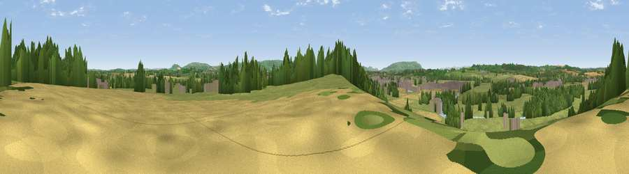

Viewpoint near Middle Littleton
#26410 in England · top 56% of its area beats it · near Middle LittletonWhere it is
The exact computed spot (SP 07125 47275). Click the marker for map links.
The view, rendered

A 360° render of this exact spot computed from the terrain model, tree cover and land cover — summer colours, afternoon light, calibrated against photographs of famous viewpoints. Real trees, hedges and buildings will differ in detail.
The panorama
Grey silhouette: terrain skyline in each direction (720 bearings, Earth curvature and refraction included). Dashed green: skyline with trees (+15 m) and buildings (+8 m) as obstacles. Blue strip: how far the ground is visible on each bearing.
Where the view opens
Wedge length = distance to the farthest visible ground on that bearing (vegetation-aware). Rings at 10, 25 and 50 km.
What fills the view
55% grassland · 26% cropland · 15% woodland · 3% built-up ·
Angular shares of the visible panorama (visual magnitude), not map area. Landscape diversity 0.48 (0–1 Shannon).
Key numbers
More beautiful places nearby
The staircase of upgrades: each row has a higher view potential than everything closer. Driving times are estimates from straight-line distance, calibrated against real road routing — check an actual route before setting out.
| Place | Direction | Drive | Score |
|---|---|---|---|
| Viewpoint near South Littleton | S · 1 km | ~3 min | 50.6 |
| Viewpoint near Norton | WNW · 4 km | ~10 min | 59.1 |
| Viewpoint near Lenchwick | W · 5 km | ~11 min | 59.3 |
| Viewpoint near Lenchwick | W · 6 km | ~12 min | 65.2 |
| Viewpoint near Chipping Campden | SE · 10 km | ~19 min | 76.3 |
| Viewpoint near Meon Vale | E · 11 km | ~20 min | 77.0 |
| Broadway Hill | SSE · 12 km | ~22 min | 77.7 |
| Viewpoint near Elmley Castle | SW · 12 km | ~23 min | 80.5 |
52.12374, -1.89734 · source: screening · position refined by local search. Computed location — check access rights before visiting.